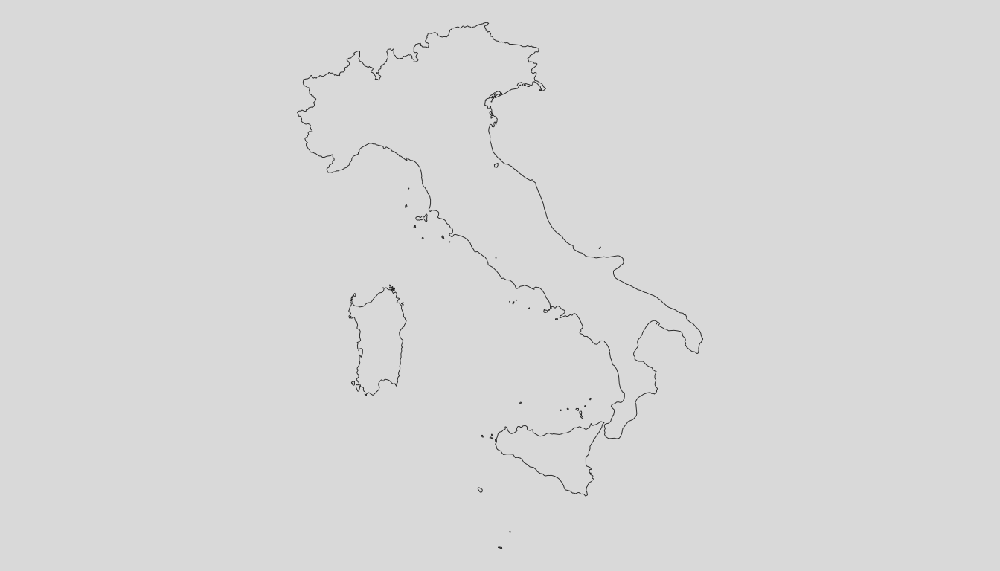
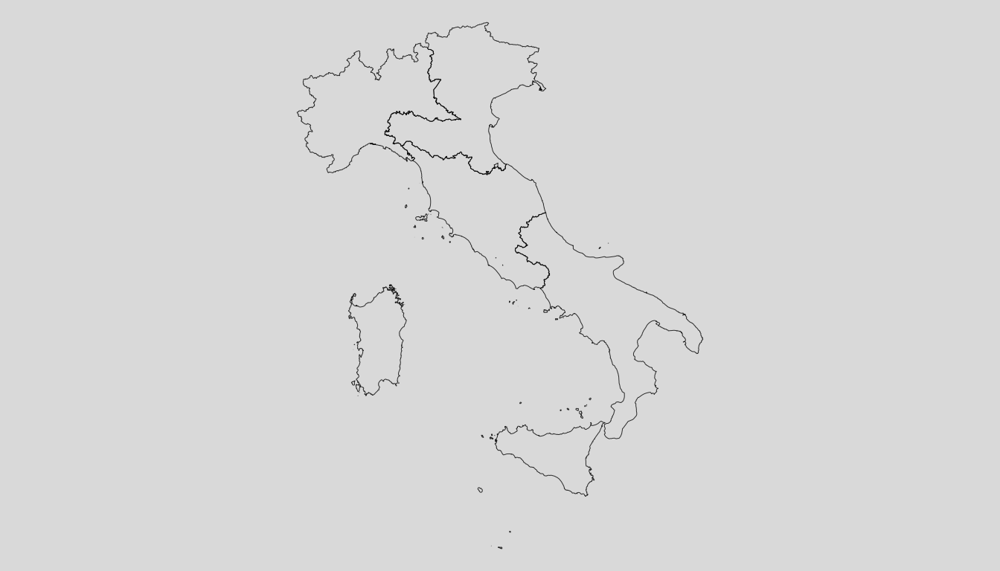
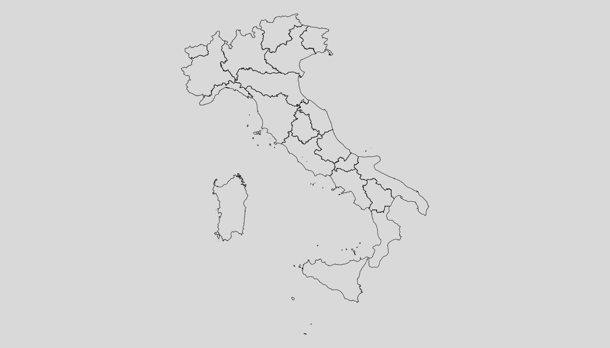
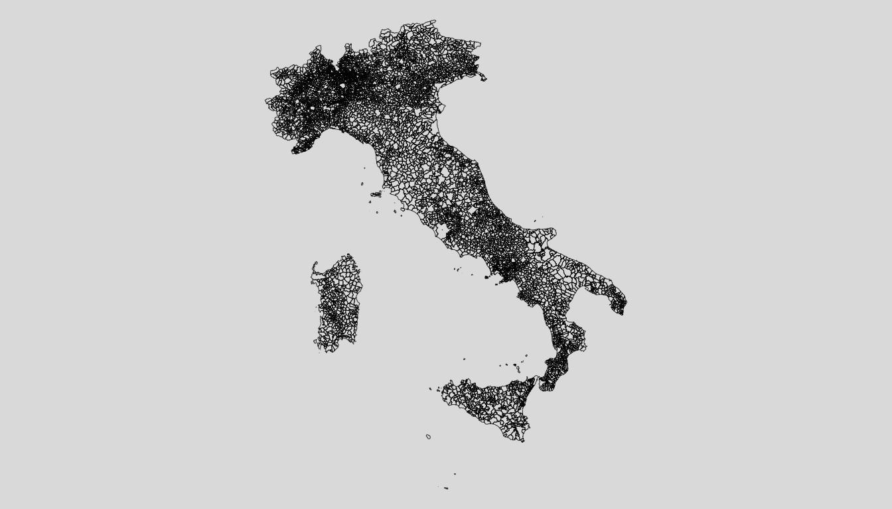

The CRAN version can be loaded as follows:
or the development version from GitHub:
remotes::install_github('serafinialessio/mapping')The Italian geographical aggregates nomenclature are the following:
| Function argument | Aggregates | Level |
|---|---|---|
| “none” | country | level 0 |
| “ripartizione” | Italian divisions | level 1 |
| “regione” | Italian regions | level 2 |
| “provincia” | Italian municipalities | level 3 |
| “comune” | Italian districts | level 4 |
where level 0 is the largest unit (country), and level 4 the smallest unit.
The diagram show the hierarchy used in the IT() to build
the object to map. Smaller aggregate/levels have all the information of
the bigger aggregates. For example, if we have “comune”, we have also
all the information until the first level, “ripartizione”.
it_level0 <- loadCoordIT(unit = "none")
mappingIT(it_level0)
it_level1 <- loadCoordIT(unit = "ripartizione")
mappingIT(it_level1)
it_level2 <- loadCoordIT(unit = "regione")
mappingIT(it_level2)
it_level3 <- loadCoordIT(unit = "provincia")
mappingIT(it_level3)
it_level4 <- loadCoordIT(unit = "comune")
mappingIT(it_level4)
Note that, given the government rule, the “provincia” and district
may change over the year.